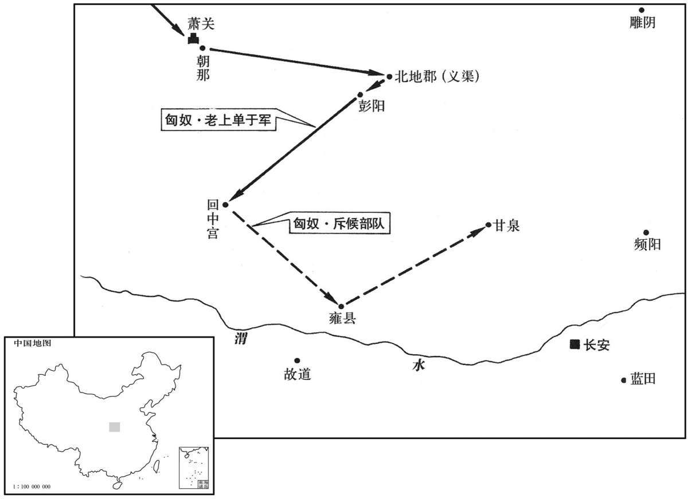

公元前166年资治通鉴：本年记事、原文与白话对照
按原书编年位置阅读；追叙和史论不等于本年发生的事件。白话采用所据译本，缺译不以生成译文补齐。
卷15 · 本年记事
公元前166年 · 汉太宗孝文皇帝前十四年
十四年〔（乙亥、前一六六）〕

本年形势与背景参考图
冬，匈奴老上单于十四万骑入朝那、萧关，〔班志，朝那县属安定郡。应劭曰：史记，故戎那邑也。萧关在朝那界，唐属原州之境，后置萧关县，为武州治所。史记正义曰：萧关，今古陇山关，在原州平凉县界。〕杀北地都尉昂，〔徐广曰：昂，姓段。师古曰：非也，姓孙。昂，五郎翻。〕虏人民畜产甚多；遂至彭阳，使奇兵入烧回中宫，侯骑至雍、甘泉。〔班志，彭阳县属安定郡。师古曰：即今彭原县。括地志：彭阳县故城，在今泾州临泾县东二十里彭原。宁州雍县，班志属扶风。骑，奇寄翻；下同。〕帝以中尉周舍、郎中令张武为将军，发车千乘、〔乘，绳证翻。〕骑卒十万军长安旁，以备胡寇；而拜昌侯卢卿为上郡将军，宁侯魏遫为北地将军，隆虑侯周为陇西将军，屯三郡。〔昌侯“卢卿”，功臣表作“旅卿”，古字借用也。姓谱：姜姓之后封于卢，以国为氏，与宁侯、隆虑侯皆高祖功臣。昌侯国属琅邪郡。宁侯国在河内修武县界。隆虑侯国亦属河内郡。三人分屯三郡，故各以郡为将军号。遫，古速字。〕上亲劳军，勒兵，申教令，赐吏卒，自欲征匈奴。群臣谏，不听；皇太后固要，上乃止。〔劳，力到翻。文颖曰：要，劫也，哀痛祝誓之言。余谓固要，力止也。要，读曰邀。康力笑翻，非也。〕于是以东阳侯张相如为大将军，成侯董赤、〔成侯董赤，高帝力臣董渫之子。成侯国属涿郡。赤，史记正义音赫。〕内史栾布皆为将军，击匈奴。单于留塞内月余，乃去。汉逐出塞即还，不能有所杀。
冬季，匈奴老上单于用十四万骑兵攻入朝那县和萧关，杀了北地郡都尉孙，掳掠了许多百姓和牲畜财产；匈奴骑兵直抵彭阳县境，并派一支奇兵深入腹地烧了回中宫，侦察骑兵一直到了雍地的甘泉宫。文帝任命中尉周舍、郎中令张武为将军，征发一千辆战车、十万骑兵驻扎在长安附近，以防御匈奴进攻；文帝又任命昌侯卢卿为上郡将军，宁侯魏为北地将军，隆虑侯周灶为陇西将军，分别率军屯守上郡、北地郡和陇西郡。文帝亲自去慰劳军队，操演军队，颁布军事训令，奖赏将士，准备亲自统兵去征伐匈奴。群臣劝阻他亲征，文帝不从；皇太后坚决阻止，文帝才打消了统兵亲征的念头。于是文帝任命东阳侯张相如为大将军，成侯董赤、内史栾布为将军，迎击匈奴。匈奴单于在汉塞之内活动了一个多月，才撤退出塞。汉军把匈奴驱逐出边塞之外，就撤兵回境，未能对匈奴有所杀伤。
上辇过郎署，问郎署长冯唐曰：〔署，郎舍也。长，知两翻。〕“父家何在？”对曰：“臣大父赵人，父徙代。”上曰：“吾居代时，吾尚食监高祛〔尚食监，主膳食之官。祛，音区。〕数为我言赵将李齐之贤，战于巨鹿下。〔当是秦将王离围巨鹿时。数，所角翻。为，于伪翻。〕今吾每饭意未尝不在巨鹿也。〔每食时，念高祛所言，其心未尝不在巨鹿。〕父知之乎？”唐对曰：“尚不如廉颇、李牧之为将也。”上搏髀曰：〔搏，拊也。左传曰：搏膺而踊。髀，音陛。〕“嗟乎，吾独不得廉颇、李牧为将！吾岂忧匈奴哉！”唐曰：“陛下虽得廉颇、李牧，弗能用也。”
文帝乘辇车经过中郎的官府，问郎署长冯唐说：“您老人家原籍是何处？”冯唐回答说：“我的祖父是赵国人，父亲迁居代国。”文帝说：“我在代国时，我的尚食监高祛多次对我称赞当年赵国将军李齐的贤能，讲述他与秦兵大战于钜鹿城下的事情。现在，我每次吃饭，心思没有不在钜鹿的时候。老人家您知道吗？”冯唐回答说：“李齐还不如廉颇、李牧为将带兵的本领大。”文帝拍着大腿说：“唉！我偏偏得不到谦颇、李牧那样的人做将军！有了这样的将军，我难道还担忧匈奴的入侵吗！”冯唐说：“陛下即使得到了廉颇、李牧也不能任用他们。”
上怒，起，入禁中，良久，召唐，让曰：“公柰何众辱我，独无间处乎！”〔师古曰：何不于隙间之处而言。〕唐谢曰：“鄙人不知忌讳。”上方以胡寇为意，乃卒复问唐曰：〔卒，子恤翻。〕“公何以知吾不能用廉颇、李牧也？”唐对曰：“臣闻上古王者之遣将也，跪而推毂，曰：『阃以内者，寡人制之：阃以外者，将军制之。』〔推，吐雷翻。阃，苦本翻，门橛也。〕军功爵赏皆决于外，归而奏之，此非虚言也。臣大父言：李牧为赵将，居边，军市之租，〔索隐曰：军中立市，市有税；税即租也。〕皆自用飨士；赏赐决于外，不从中覆也。〔师古曰：覆，谓覆白之也。一说，不从中覆校其所用之数，亦通。〕委任而责成功，故李牧乃得尽其智能；选车千三百乘，〔乘，绳证翻。〕彀骑万三千，百金之士十万，〔弓弩引满为彀；谓骑兵能射者。服虔曰：良士直百金。晋灼曰：百金，喻贵重也。彀，古候翻。骑，奇寄翻。〕是以北逐单于，破东胡，灭澹林，〔澹林，即襜褴。澹，丁甘翻。〕西抑强秦，南支韩、魏；当是之时，赵几霸。〔几，居依翻。〕其后会赵王迁立，用郭开谗，卒诛李牧，〔事见六卷始皇十八年。卒，子恤翻。〕令颜聚代之；是以兵破士北，为秦所禽灭。今臣窃闻魏尚为云中守，〔守，式又翻。〕其军市租尽以飨士卒，私养钱〔服虔曰：私廪假钱。索隐曰：按汉市肆租税之入为私奉养。服虔曰：私廪假钱是也。或云：官所别给也。余谓当从汉书以私养钱属下句。〕五日一椎牛，自飨宾客、军吏、舍人，是以匈奴远避，不近云中之塞。〔近，其靳翻。〕虏曾一入，尚率车骑击之，所杀甚众。夫士卒尽家人子，〔师古曰：家人子，谓庶人家之子也。〕起田中从军，安知尺籍、伍符！〔李奇曰：尸籍，所以书军令；伍符，军士伍伍相保之符信也。如淳曰：汉军法曰：吏卒斩首，以尺籍书下县移郡；令人故行不行，夺劳二岁。伍符，亦什五之符要节度也。或曰：以尺简书，故曰尺籍也。索隐曰：按尺籍者，谓书其斩首之功于一尺之板。伍符者，令军人伍伍相保，不容奸诈也。〕终日力战，斩首捕虏，上功幕府，〔上，时掌翻。〕一言不相应，〔索隐曰：应，一陵翻，谓数不同也。余谓相应之应，当从去声。〕文吏以法绳之，其赏不行；而吏奉法必用。臣愚以为陛下赏太轻，罚太重。且云中守魏尚坐上功首虏差六级，陛下下之吏，削其爵，罚作之。〔苏林曰：一岁刑为罚作。下之，遐嫁翻。〕由此言之，陛下虽得廉颇、李牧，弗能用也！”上说。〔说，应曰悦。〕是日，令唐持节赦魏尚，复以为云中守，而拜唐为车骑都尉。〔详考班表：汉无车骑都尉官。时使唐主中尉及郡国车士。〕
文帝大怒，起身返回宫中，过了许久，召见冯唐，责备说：“您为什么要当众侮辱我，难道没有适当的机会吗！”冯唐谢罪说：“我是个乡鄙之人，不懂得忌讳。”文帝正在担忧匈奴的入侵问题，于是终于再问冯唐说：“您怎么知道我不能任用廉颇和李牧呢？”冯唐回答说：“我听说上古明君派遣将军出征时，跪着推将军的车辆前行，而且说：‘国门之内的事，由我来决定；国门以外的事情，请将军裁决。’一切军功、封爵、奖赏的事都由将军在外面决定，回国后再奏报君主。这并不是虚假的传言。我的祖父说：李牧为赵国将军，驻守边境时，把从军中交易市场上收得的税收，都自行用于犒劳将士；赏赐都由将军在外决定，不必向朝廷请示批准。对他委以重任而责令成功，所以李牧才能充分发挥他的聪明才干；他率领着精选出来的一千三百辆战车、一万三千名善于骑射的骑兵，十万训练有素的将士，所以能够在北方驱逐匈奴，击败东胡，消灭澹林，在西方抑制了强大的秦国，在南方抵御了韩国和魏国；在那个时候，赵国几乎成为一个霸主之国。后来，恰 逢赵王赵迁继位，他听信郭开的谗言，终于诛杀李牧，命令颜聚代替李牧而统兵；正因为如此，赵国军队溃败，将士逃散，被秦军消灭。现在我私下听说魏尚担任云中郡郡守时，把军中交易市场所得的税收全都用来犒劳士卒，还用自已的官俸钱，每五天宰杀一头牛，自已宴请宾客、军吏和幕僚属官，因此，匈奴远避，不敢接近云中边塞。匈奴曾经入侵云中郡一次，魏尚率领车骑部队出击，杀了很多匈奴人。那些士兵都是平民百姓的子弟，从田间出来参军从征，怎能知道‘尺籍’‘伍符’之类的军令军规！整日拼死战斗，斩敌首级，捕获俘虏，在向幕府呈报战果军功时，只要一个字有出入，那些舞文弄墨的官员，就引用军法来惩治他们，他们应得到的赏赐就被取消了；而那些官吏所奉行的法令却必须执行。我认为陛下的赏赐太轻，而惩罚却太重。而且云中郡守魏尚因为上报斩杀敌军首级的数量差了六个，陛下就把他交给官吏治罪，削去他的爵位，判罚他做一年的刑徒。由此说来，陛下即使得到廉颇、李牧，也不能任用啊！”文帝高兴地接受了冯唐的批评。当天，就令冯唐持皇帝信节去赦免魏尚，重新任命魏尚做云中郡守，并任命冯唐为车骑都尉。
春，诏广增诸祀坛场、圭币，〔师古曰：筑土为坛、除土为场；圭币，所以荐神。〕且曰：“吾闻祠官祝厘，〔如淳曰：厘，福也。师古曰：“厘”，本作“禧”，假借用耳；音禧。祝，职救翻。〕皆归福于朕躬，不为百姓，〔为，于伪翻。〕朕甚愧之。夫以朕之不德，而专飨独美其福，百姓不与焉，是重吾不德也。〔与，读曰预。师古曰：重，直用翻。〕其令祠官致敬，无有所祈！”
春季，文帝诏令扩大祭祀的场所，增加祭祀所用的玉和币帛，并且说：“朕听说祠官在祭祀的祈福祷告中，都将福归于朕个人，而没有为百姓祈福，朕对此很感惭愧。以朕这样的失德之人，独享神灵的福荫，而百姓们却不能分享，这是加重朕的过失。此后祠官在祭祀祷告时，不要再为朕个人祈祷祝福！”
是岁，河间文王辟强薨。
这一年，河间王刘辟强去世。
初，丞相张苍以为汉得水德，鲁人公孙臣以为汉当土德，其应，黄龙见；苍以为非，〔【章：甲十五行本“非”下有“是”字；乙十一行本同；孔本同。】〕罢之。〔公孙臣上书曰：“始，秦得水德；推终始传，汉当土德。土德之应，黄龙见；宜改正朔，服色尚黄。”张苍以为：“汉乃水德，河决金堤，其符也。公孙臣言非是，罢之。”见，贤遍翻。〕
当初，丞相张苍认为汉朝得“五行”中的水德。鲁国人公孙臣认为汉朝当属土德，与土德相应，应该出现黄龙；张苍认为公孙臣说的不对，不采纳崐他的观点。